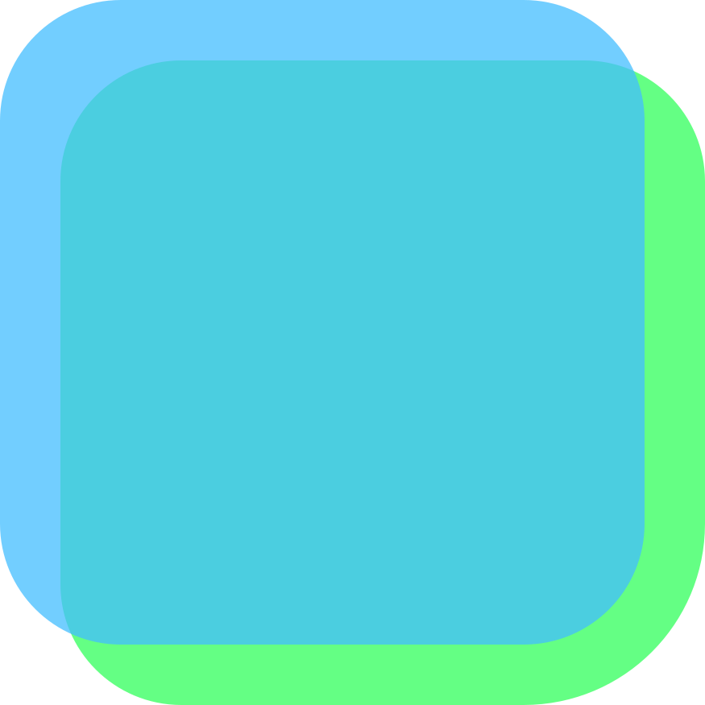
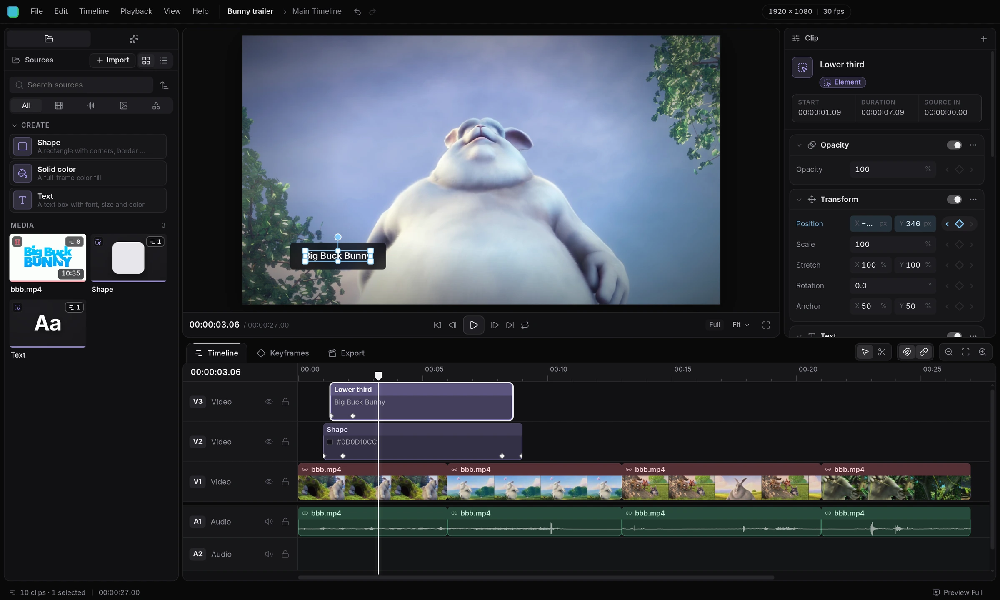
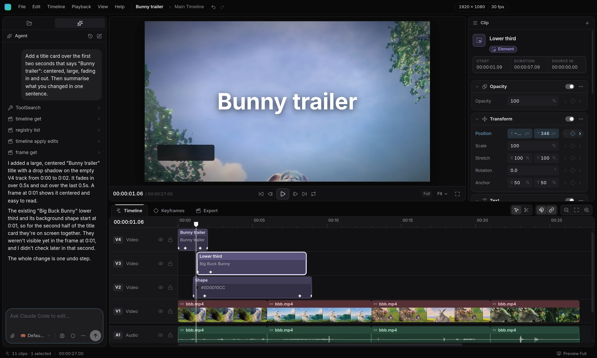
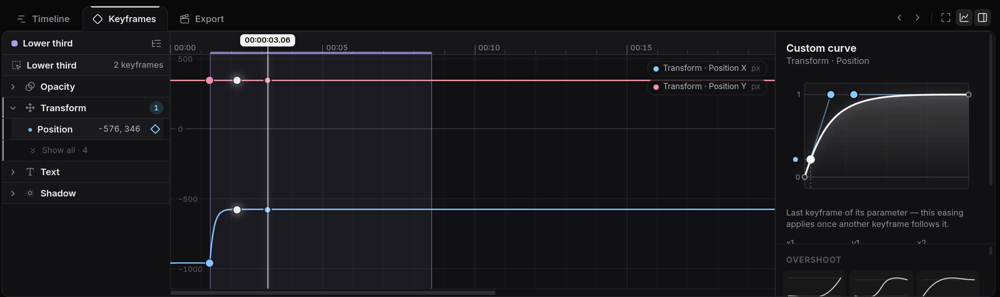
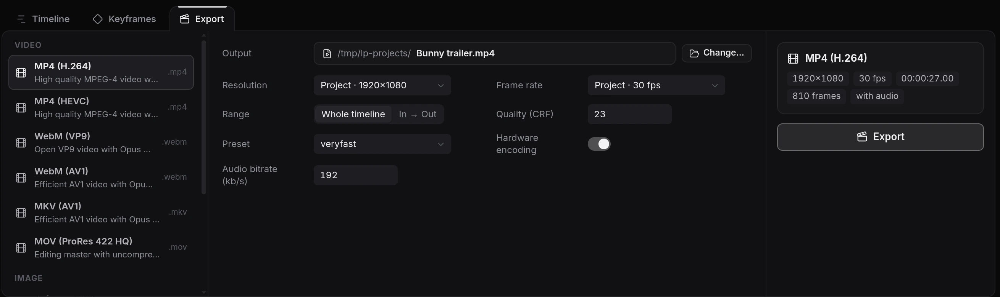

Cascadev0.1 · in active development · MIT licensed
Cascade is built on HTML, CSS and TypeScript, the technology coding agents know best. That means they can read your timeline, help with the edit, and write plugins for you.

Your media, text and shapes The preview is a real web page Properties you can stack and animate Cuts that land on the exact wordWeb tech
Every frame is drawn by the same engine that renders the websites you use every day, including this one. If a browser can show it, it can go in your video.
Layouts scale with the frame, so a small preview and a 4K export look exactly the same.
Copilot
Ask Claude Code, Codex, OpenCode or Cursor to handle the tedious parts from the Agent panel. It sees the same timeline you do, and every change it makes is one undo away.

Animate
Every property has a keyframe button, so a click is all it takes. Pick spring, elastic, bounce or your own curve, and watch it play back right away.

Plugins
Everything in Cascade is a plugin on the same API you get. Drop a .ts file in your plugins folder, or have your agent write one, and it reloads as you save.
plugins/wiggle.tsexport default {
id: 'example.wiggle',
activate(ctx) {
ctx.properties.register({
id: 'wiggle', name: 'Wiggle',
params: [
{ id: 'amount', type: 'number', default: 0.01 },
{ id: 'frequency', type: 'number', default: 2 }
],
apply(v, { u, local }) {
const t = local / FLICKS * v.frequency
return { transform: [
`translate(${u.x(noise(t) * v.amount)}, ${u.y(noise(t + 9) * v.amount)})`
] }
}
})
}
}
Export
Pick a codec, resolution and frame rate, or export audio on its own. Your GPU speeds up encoding when it can, and everything renders on your machine.

Open source
Cascade is early, runs on Linux and Windows for now, and changes every week. Download it, tell us what breaks, and send a pull request if you want to help.
Scroll to scrub · Space to play